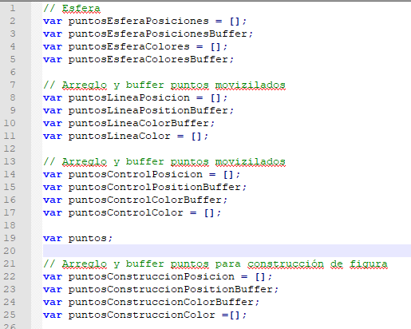
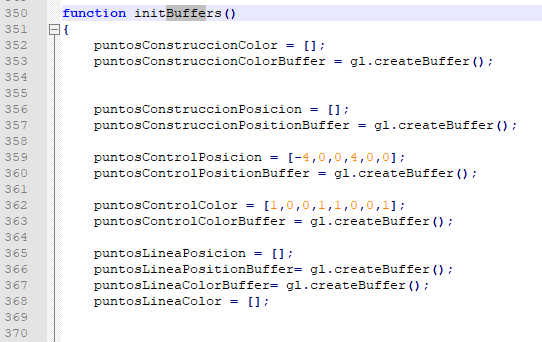
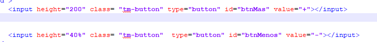
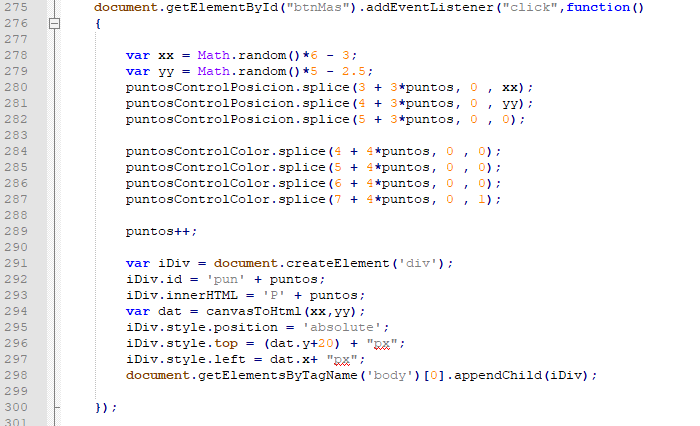
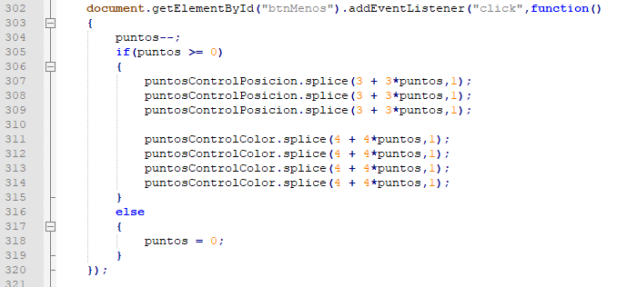
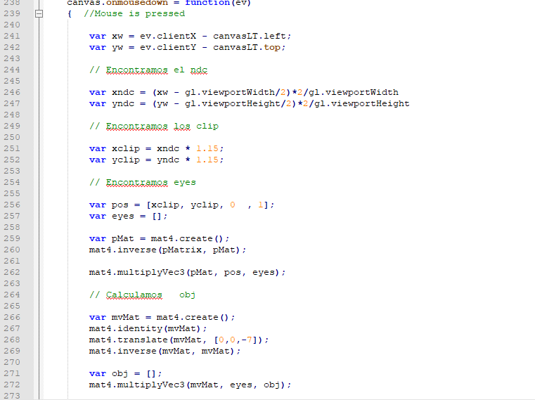
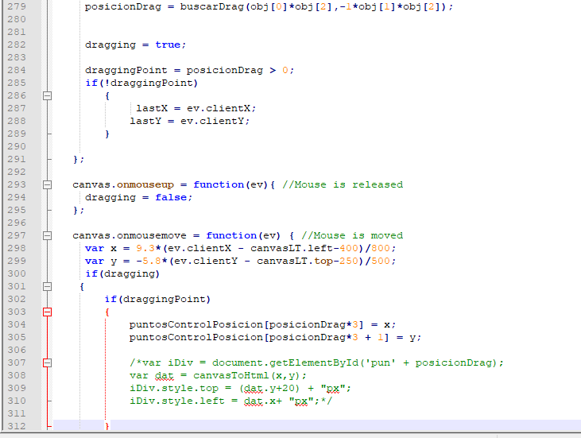
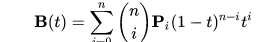
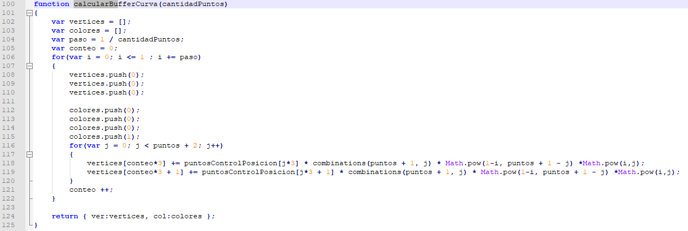

Johann Felipe González Ávila
Computación Visual Interactiva.
Cambio de cámaras
En esta ocasión les presento un demo de una figura irregular que se translada por medio de un camino formado por las llamadas Curva de Bézier. El desarrollo ha sido completamente propio.
Para hacerlo más atractivo le he agregado 3 elementos de interacción que pueden utilziar.
- Número de puntos: En el costado izquierdo encuentran dos botones de más y menos. Estos controlan los puntos adicionales a los de partida. En principio no hay límite de puntos extra
- Posicion puntos: La posición de los puntos es modificable y funciona con un Drag and drop. Se ha modificado el código para calcular las posicones de los objetos de manera absoluta.
- La cantidad de puntos sobre la curva: La curva puede ser mas o menos fina con el slider en la parte de abajo.
|
Cantidad de puntos |
Para lograr esto se jugó con la matriz de proyección en posición y rotación. Como se nota, los efectos son suaves, luego los cambios se realizan graduales por medio de matrices intermedias. Para esto creamos 4 botones para manejar las vistas. de la siguiente manera.
Curva
Primero, se crean 4 grupos de elementos para. 1) Los puntos a dibujarse. 2) La línea 3) los colores de la línea y 4= puntos y colores de la esfera. También es necesario llevar la cuenta de la cantidad de puntos extras que se agregaron.
En ejemplos anteriores se crearon métodos para generar las esferas. Se utiliza para crear las esferas y los buffers iniciales se crean solo con los dos puntos
Agregando puntos
Para poder agregar los puntos, primero agregamos los botones
Luego creamos la lógica para crearlos. Primero se crean con posiciones arbitrarias. La matemática para hacer cuadrar las posiciones dentro del canvas con las posiciones absolutas del HTML no funcionaron en principio, por lo que de momento lo hice a prueba y fallo. De ahí los valores quemados que se usan. También se agrega una etiqueta para poder identificar al punto.
 Con los nuevos puntos introducidos, se calcula la curva. Esto se explicará más adelante.
Drag and drop
Para el drog and drap primero se trato de ubicar el punto que se estaba oprimiendo. En un SVG esta tarea es más facil pues ahí se crean los elementos y se puede crear el evento individualizado. Se hace una matemática inversa para entender los puntos sobre el canvas a partir de los puntos absolutos.
 El método de buscarDrag busca si el click está en la vecindad de alguno de los puntos y devuelve la posición dentro del arreglo de puntos.
La curva.
Para la curva se aplica la formula general de las curvas explicadas en wikipedia 
Donde n +1 es la cantidad de puntos y t el tiempo. Para esto se recrea teniendo en cuenta la cantidad de puntos que se van a dibujar en la curva. Este parámetro lo maneja el slider
Ya calculados los puntos y demás el resto es receta. Aca el proyecto en Fiddel para poder verlo rápidamente